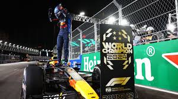

Andretti Cadillac sarà l'undicesimo team dal 2026
Finisce una guerra finalmente tra la FIA e Andretti che finalmente il team Americano entrerà in griglia a partire dal 2026.

Finisce una guerra finalmente tra la FIA e Andretti che finalmente il team Americano entrerà in griglia a partire dal 2026.
Russell domina tutto il weekend e la Mercedes porta il 1-2 a Las Vegas. Verstappen arriva quinto e matematicamente vince il suo quarto mondiale in carriera.
